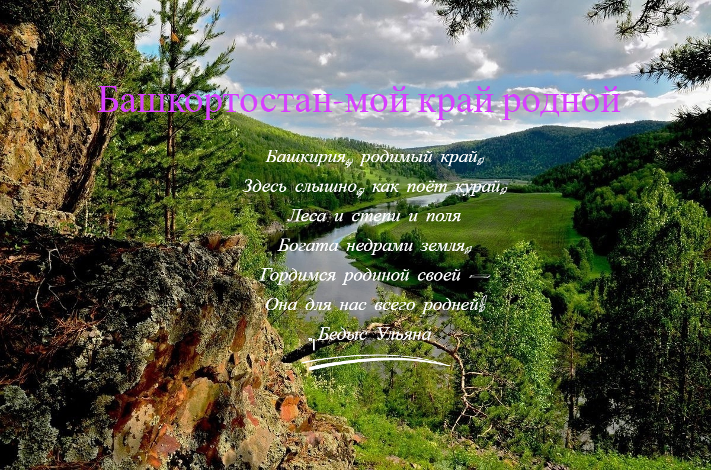

Участник конкурса "КРИТ-2024" Кудабаев Тимур приветствует жюри конкурса!

Республика Башкортостан— субъект Российской Федерации, входит
в Приволжский федеральный округ.
Столица — город Уфа.
Республика имеет свои государственные символы.
Башкортостан расположен на границе двух частей света — Европы и Азии, на западных склонах Южного Урала и в Предуралье. Протяжённость Башкортостана с севера на юг 550 км, с запада на восток — 430 км.
Население республики составляет более 4 млн, а проживает около 100 национальностей.
Край мой невероятно красив и богат на достопримечательности!